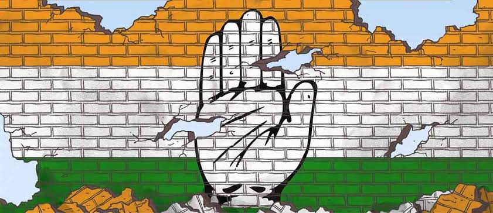

Changing Power Dynamics: The uprising of AAP as the relevant opposition
March 14, 2022 | 3 comments
Declining electoral presence of Congress since the 2014 Lok Sabha elections has created a vacancy at the Centre. This led to many changing equations to form an Anti-BJP alternative alliance in the previous eight years, but all these changing power dynamics witnessed negligible outcomes. Just like every other regional party AAP dreams to come to the national forefront, with this landslide victory in Punjab. They are proving to be potential alternative to the traditional parties.
CONTINUE READING